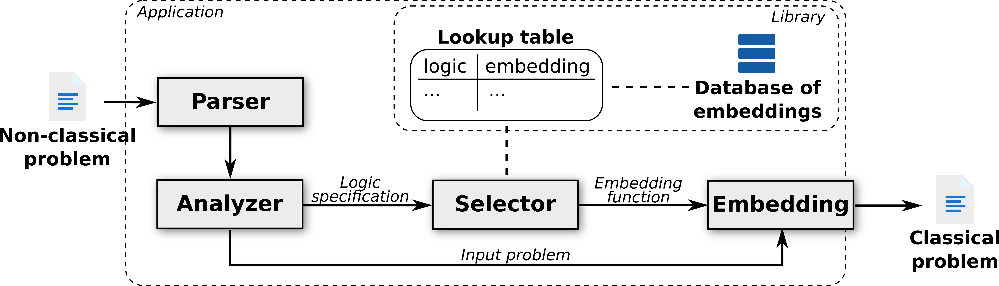

Embedding NTF into THF

Embedding Process
- Encode semantics of source logic as terms/formulae in target logic
- Kripke semantics is simulated in higher-order logic (THF)
- Type for worlds, binary relation on worlds
- Non-classical connectives evaluated wrt worlds
- Logical consequence similarly mapped
- Implemented in Leo-III, and as a stand-alone tool
Pros and Cons of Translation
- + Reuse of higher-order ATP systems
- + Ability to flexibly translate many (modal) logics
- + Ability to capture semantic variations
- - Adds "clutter" that makes resultant problems difficult